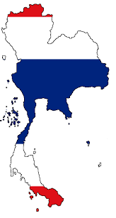
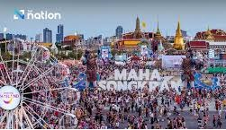
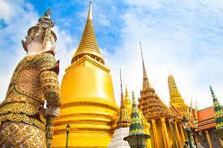
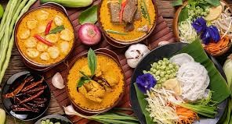
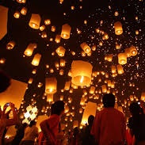

Songkran – also known as the Water Splashing Festival – is a celebration to mark the start of the Buddhist New Year. Buddha images are bathed, and younger Thais show respect to monks and elders by sprinkled water over their hands.
Songkran coincides with the sun's transit into the Aries constellation, marking the start of the traditional new year. The festival is rooted in cultural and religious practices, promoting blessings and good fortune for the coming year.
The Songkran Festival, held annually on April 13th, is a significant Thai New Year celebration. It's observed with water activities symbolizing purification and cleansing, believed to wash away misfortune and usher in prosperity. The holiday period typically extends from April 14th to 15th, although in 2018, the Thai cabinet extended the nationwide festival to seven days.
is primarily a Theravada Buddhist tradition, deeply interwoven with Thai culture and history. It emphasizes short-term ordination for Thai men and has a strong connection to the monarchy, with Thai kings traditionally being seen as patrons of Buddhism. Buddhism is considered a guiding philosophy for life by many Thais, with its principles like tolerance and merit being deeply ingrained in Thai society.
Thai Buddhism, practiced by the majority of the Thai population, is deeply intertwined with Thai culture and the state. It's a form of Theravada Buddhism, also prevalent in other Southeast Asian countries. A key aspect of Thai Buddhism is the tradition of short-term ordination for men, highlighting its integration into daily life. Public displays of reverence are common, reflecting its central role in Thai society.
The Yi Peng Lantern Festival, also known as Yee Peng, in Thailand will take place on November 5-6, 2025, in Chiang Mai. A key highlight of the festival is the release of thousands of paper lanterns (khom loi) into the night sky, symbolizing the letting go of misfortune and the welcoming of good luck. This festival is a visual spectacle and a deeply cultural event. Loy Krathong often coincides with Yi Peng, adding to the celebrations. This is a very popular event, so if attending, booking flights and accommodations in advance is highly recommended.
The Lantern Festival, also called Shangyuan Festival and Cap Go Meh, is a Chinese traditional festival celebrated on the fifteenth day of the first month in the lunisolar Chinese calendar, during the full moon.
Thailand is home to Buddhist temples, exotic wildlife and spectacular islands. It is also known for its fascinating history, unique culture and delectable local food. The tourism industry plays an important role in the Thai economy and contributes an estimated 18.4 percent to the national GDP.
Thailand is the only country in South East Asia to have escaped colonial rule. Buddhist religion, the monarchy and the military have helped to shape its society and politics. The military has ruled for most of the period since 1947, with a few interludes in which the country had a democratically elected government.